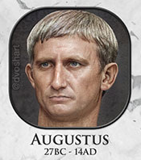
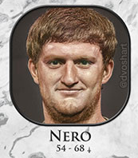
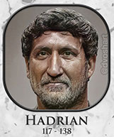

Here are some of the portraits that AI was able to generate. Learn more about the project here.
Augustus
Augustus was the first Roman Emperor. He came into power when the dictatorship of his adoptive father, Julius Caesar, was overthrown. Augustus is known for his administrative genius that ushered in a durable Roman Peace (Pax Romana) due to easy communication and trading across the Empire.
Augustus reigned from 27BC - 14AD. His famous last words were: Have I played the part well? Then applaud as I exit.
His last words to the public were, Behold, I found Rome of clay, and leave her to you of marble.
Nero
Nero was the 5th Roman emperor. Contemporary sources describe Nero as tyrannical, self-indulgent, and debauched. There is a popular legend that Nero played the fiddle while Rome burned.
Nero reigned from 54 AD - 68 AD. He did many terrible, terrible things in his time as Emperor.
Hadrian
Hadrian reigned from 117 AD - 138 AD. He was very enthusiastic about art, architecture, and public works. He re-built many towns and supplied them with temples, stadiums, and other public buildings.
He has been described as enigmatic and contradictory, with a capacity for both great personal generosity and extreme cruelty and driven by insatiable curiosity, self-conceit, and ambition.